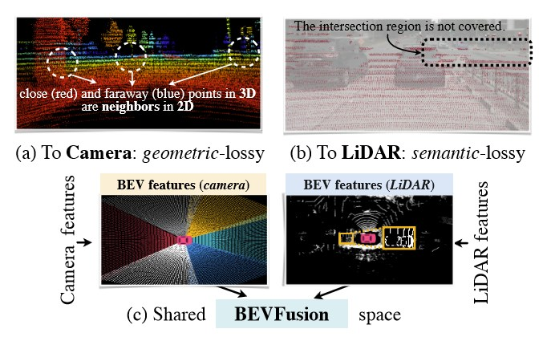
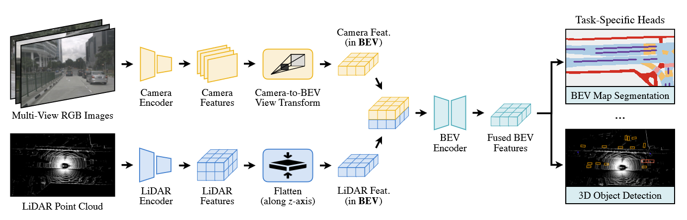
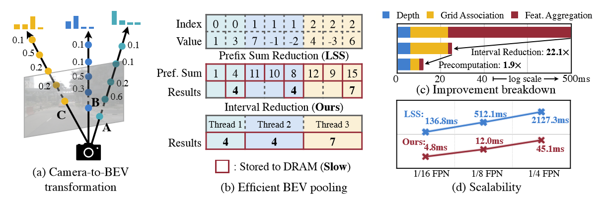
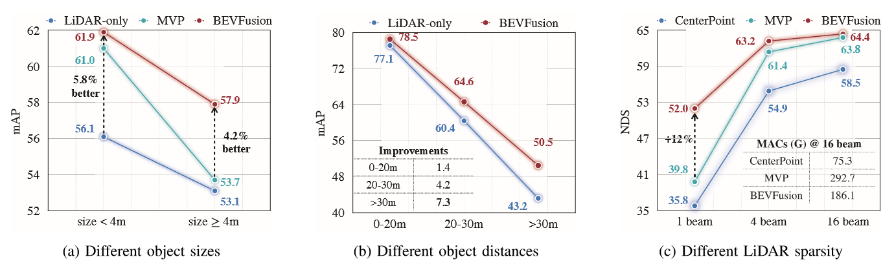

Zhijian Liu*,1、Haotian Tang*,1、Alexander Amini1、Xinyu Yang1、Huizi Mao2、Daniela L. Rus1、Song Han1
1 Massachusetts Institute of Technology、2 OmniML
arXiv:2205.13542v3 [cs.CV]、2024年9月1日
翻訳について：原文 PDF は
09_BEVFusion_2205.13542.pdf（全 8 ページ）。本文、図の説明、図中ラベル、表、脚注、付録を訳出し、論文タイトルと参考文献は原文のまま掲載。図は原図を掲載し、英語ラベルの日本語訳を併記した。数式・数値・引用番号・コードの識別子は原文を維持。原文の記述に関する補足は「訳注」と明示し、本文と区別している。
マルチセンサ融合は、正確で信頼性の高い自動運転システムに不可欠である。最近の手法は点レベル融合（point-level fusion）に基づいており、LiDAR 点群をカメラ特徴で拡張する。しかし、カメラから LiDAR への射影はカメラ特徴の意味的密度（semantic density）を捨ててしまうため、こうした手法の有効性を損なう。これは特に意味指向のタスク（3D シーンセグメンテーションなど）で顕著である。本論文では、効率的かつ汎用的なマルチタスク・マルチセンサ融合フレームワークである BEVFusion を提案する。BEVFusion はマルチモーダルな特徴を共有の鳥瞰図（bird's-eye view, BEV）表現空間に統合し、幾何情報と意味情報の両方をうまく保持する。これを実現するため、視点変換における主要な効率上のボトルネックを診断し、最適化した BEV プーリングによってこれを解消し、レイテンシを 40 倍以上削減する。BEVFusion は本質的にタスク非依存であり、アーキテクチャをほとんど変更せずにさまざまな 3D 知覚タスクをシームレスにサポートする。nuScenes ベンチマークにおいて新たな最高性能を確立し、3D 物体検出では mAP と NDS で 1.3% 高く、BEV 地図セグメンテーションでは mIoU で 13.6% 高い性能を、1.9 倍少ない計算コストで達成する。結果を再現するためのコードは https://github.com/mit-han-lab/bevfusion で公開している。

図1：BEVFusion は、一方のモダリティを他方へ写像するのではなく、カメラと LiDAR の特徴を共有の BEV 空間に統合する。これにより、カメラの意味的密度と LiDAR の幾何構造の両方が保持される。
図中ラベル：(a) To Camera: geometric-lossy＝カメラへ：幾何情報が失われる、close (red) and faraway (blue) points in 3D are neighbors in 2D＝3D では近い点（赤）と遠い点（青）が 2D では隣り合う、(b) To LiDAR: semantic-lossy＝LiDAR へ：意味情報が失われる、The intersection region is not covered.＝交差点の領域がカバーされていない、(c) Shared BEVFusion space＝共有の BEVFusion 空間、BEV features (camera)＝BEV 特徴（カメラ）、BEV features (LiDAR)＝BEV 特徴（LiDAR）、Camera features＝カメラ特徴、LiDAR features＝LiDAR 特徴
自動運転システムは多様なセンサを搭載している。例えば、Waymo の自動運転車は 29 台のカメラ、6 台のレーダ、5 台の LiDAR を備えている。センサが異なれば得られる信号は相補的であり、例えばカメラは豊かな意味情報を捉え、LiDAR は正確な空間情報を提供し、レーダは即時の速度推定を可能にする。したがって、マルチセンサ融合は正確で信頼性の高い知覚に不可欠である。
異なるセンサからのデータは根本的に異なるモダリティで表現されている。例えば、カメラはデータを透視ビュー（perspective view）で捉え、LiDAR は 3D ビューで捉える。この視点の不一致を解消するには、マルチタスク・マルチモーダルな特徴融合に適した統一表現を見つける必要がある。2D 知覚の大成功を受けて、自然な発想は LiDAR 点群をカメラに射影し、RGB-D データを 2D CNN で処理することである。しかし、この LiDAR からカメラへの射影は深刻な幾何学的歪みをもたらし（図1a 参照）、3D 物体認識のような幾何指向のタスクに対しては有効性が下がる。
最近のセンサ融合手法は逆方向をとっている。LiDAR 点群を意味ラベル［1］、CNN 特徴［2］、［3］、あるいは 2D 画像からの仮想点［4］で拡張し、その後、既存の LiDAR ベース検出器を適用して 3D バウンディングボックスを予測する。これらの点レベル融合手法は大規模な検出ベンチマークで目覚ましい性能を示してきたが、BEV 地図セグメンテーション［5］、［6］、［7］、［8］のような意味指向のタスクではほとんど機能しない。これは、カメラから LiDAR への射影が意味的に損失を伴う（semantically lossy）ためである（図1b 参照）。典型的な 32 ビーム LiDAR スキャナでは、LiDAR 点に対応付けられるカメラ特徴はわずか 5% であり、それ以外はすべて捨てられる。このような密度の差は、より疎な LiDAR（あるいはレーダ）ではさらに顕著になる。
脚注*：筆頭の 2 名の著者は等しく貢献しており、アルファベット順に記載している。本研究は MIT-IBM Watson AI Lab、National Science Foundation、Hyundai Motor、Qualcomm、NVIDIA、Apple の支援を受けた。Zhijian Liu は Qualcomm Innovation Fellowship の部分的な支援を受けた。
脚注1：Z. Liu、H. Tang、A. Amini、X. Yang、D. Rus、S. Han は Massachusetts Institute of Technology（Cambridge, MA 02139, USA）に所属。
脚注2：H. Mao は OmniML（San Jose, CA 95131, USA）に所属。
本論文では、タスク非依存の学習のために、マルチモーダルな特徴を共有の鳥瞰図（BEV）表現空間に統合する BEVFusion を提案する。幾何構造と意味的密度の両方を維持し（図1c 参照）、ほとんどの 3D 知覚タスクを自然にサポートする（それらの出力空間は BEV で自然に表現できるため）。すべての特徴を BEV に変換する過程で、視点変換に主要かつ致命的な効率上のボトルネックがあることを突き止めた。すなわち、BEV プーリング演算だけでモデルの実行時間の 80% 以上を占める。そこで、事前計算と区間リダクション（interval reduction）を備えた専用カーネルを提案してこのボトルネックを解消し、40 倍以上の高速化を達成する。最後に、完全畳み込みの BEV エンコーダを適用して統一された BEV 特徴を融合し、いくつかのタスク固有ヘッドを付加して異なる対象タスクをサポートする。
BEVFusion は nuScenes と Waymo の両ベンチマークで 3D 物体検出の新たな最高性能を達成した。テスト時拡張（test-time augmentation）やモデルアンサンブルの有無にかかわらず、公開されているすべての手法を上回る。BEVFusion は BEV 地図セグメンテーションでさらに顕著な改善を示す。カメラのみのモデルより mIoU で 6%、LiDAR のみのモデルより mIoU で 13.6% 高い性能を達成する一方、既存の融合手法はほとんど機能しない。さらに BEVFusion は非常に効率的であり、これらの結果をすべて 1.9 倍少ない計算コストで実現する。

図2：BEVFusion はマルチモーダルな入力から特徴を抽出し、視点変換を用いてそれらを共有の鳥瞰図（BEV）空間へ効率的に変換する。統一された BEV 特徴を完全畳み込みの BEV エンコーダで融合し、タスク固有ヘッドによってさまざまなタスクをサポートする。
図中ラベル：Multi-View RGB Images＝多視点 RGB 画像、Camera Encoder＝カメラエンコーダ、Camera Features＝カメラ特徴、Camera-to-BEV View Transform＝カメラから BEV への視点変換、Camera Feat. (in BEV)＝カメラ特徴（BEV 上）、LiDAR Point Cloud＝LiDAR 点群、LiDAR Encoder＝LiDAR エンコーダ、LiDAR Features＝LiDAR 特徴、Flatten (along z-axis)＝平坦化（z 軸方向）、LiDAR Feat. (in BEV)＝LiDAR 特徴（BEV 上）、BEV Encoder＝BEV エンコーダ、Fused BEV Features＝融合された BEV 特徴、Task-Specific Heads＝タスク固有ヘッド、BEV Map Segmentation＝BEV 地図セグメンテーション、3D Object Detection＝3D 物体検出
点レベル融合は過去 3 年間、定番の選択肢であったが、BEVFusion は「LiDAR 空間はセンサ融合を行うのに適切な場所なのか？」と問い直すことで、マルチセンサ融合の分野に新たな視点をもたらす。これまで見過ごされてきた別のパラダイムの優れた性能を示すものである。単純さもその大きな強みである。本研究が今後のセンサ融合研究にとって単純かつ強力なベースラインとなり、汎用的なマルチタスク・マルチセンサ融合の設計とパラダイムを研究者が再考するきっかけとなることを期待する。
LiDAR ベースの 3D 知覚。研究者たちは、PointNets［15］や SparseConvNet［16］を用いて平坦化した点群特徴を抽出し、BEV 空間で検出を行う単段（single-stage）3D 物体検出器［9］、［10］、［11］、［12］、［13］、［14］を設計してきた。その後、［17］、［18］、［19］、［20］、［21］、［22］、［23］はアンカーフリーの単段 3D 物体検出を探求した。別の研究の流れ［24］、［25］、［26］、［27］、［28］、［29］は二段（two-stage）物体検出器の設計に焦点を当てており、既存の単段物体検出器に RCNN ネットワークを追加する。
カメラベースの 3D 知覚。LiDAR センサは高価であるため、研究者たちはカメラのみの 3D 知覚に多大な努力を注いできた。FCOS3D［30］は画像検出器［31］に 3D 回帰の分岐を追加して拡張したものであり、後に［32］、［33］によって深度のモデル化が改善された。透視ビューで物体検出を行う代わりに、［34］、［35］は 3D 空間における学習可能な物体クエリを持つ DETR［36］、［37］ベースの検出ヘッドを設計した。LiDAR ベース検出器の設計に触発された別のタイプのカメラのみの 3D 知覚モデルは、ビュートランスフォーマ（view transformer）［5］、［38］、［39］、［6］を用いてカメラ特徴を透視ビューから鳥瞰図へ明示的に変換する。BEVDet［40］と M2BEV［41］は LSS［6］と OFT［38］を 3D 物体検出へ拡張し、CaDDN［42］はビュートランスフォーマに明示的な深度推定の教師信号を追加する。最近の研究［43］、［8］は、マルチヘッド注意機構を用いた視点変換も研究している。
マルチセンサ融合。近年、マルチセンサ融合は 3D 検出のコミュニティで大きな関心を集めている。既存の手法は提案レベル（proposal-level）融合手法と点レベル（point-level）融合手法に分類できる。初期の手法である MV3D［44］は 3D で物体候補（proposal）を生成し、その候補を画像に射影して RoI 特徴を抽出する。［45］、［46］、［47］はいずれも画像上の候補を 3D の錐台（frustum）へ持ち上げる。最近の FUTR3D［48］と TransFusion［49］は 3D 空間に物体クエリを定義し、画像特徴をこれらの候補に融合する。提案レベル融合手法はすべて物体中心（object-centric）であり、BEV 地図セグメンテーションのような他のタスクへ容易には一般化できない。一方、点レベル融合手法は通常、画像の意味特徴を前景の LiDAR 点に塗り付け（paint）、装飾された点群入力に対して LiDAR ベースの検出を行う。そのため、これらは物体中心かつ幾何中心（geometric-centric）である。これらの手法のうち、［1］、［2］、［4］、［50］、［51］は（LiDAR の）入力レベルの装飾であり、DCF［52］と DeepFusion［3］は特徴レベルの装飾である。
既存のすべての手法とは対照的に、BEVFusion は共有の BEV 空間でセンサ融合を行い、前景と背景、幾何情報と意味情報を等しく扱う。これは汎用的なマルチタスク・マルチセンサ知覚フレームワークである。
図2 に示すように、BEVFusion はマルチタスク 3D 知覚（すなわち検出とセグメンテーション）のためのマルチセンサ融合（すなわち多視点カメラと LiDAR）に焦点を当てる。異なるセンサ入力が与えられると、まずモダリティ固有のエンコーダを適用してそれぞれの特徴を抽出する。マルチモーダルな特徴を、幾何情報と意味情報の両方を保持する統一された BEV 表現へ変換する。視点変換の効率上のボトルネックを特定し、事前計算と区間リダクションによって BEV プーリングを高速化する。次に、統一された BEV 特徴に畳み込みベースの BEV エンコーダを適用し、異なる特徴間の局所的な位置ずれを緩和する。最後に、いくつかのタスク固有ヘッドを付加して、さまざまな 3D タスクをサポートする。
異なる特徴は異なるビューに存在しうる。例えば、カメラ特徴は透視ビューにあるのに対し、LiDAR／レーダの特徴は通常 3D／鳥瞰図ビューにある。カメラ特徴どうしであっても、それぞれが異なる視野角（すなわち前方、後方、左、右）を持つ。この視点の不一致は特徴融合を困難にする。異なる特徴テンソルの同じ要素が、まったく異なる空間位置に対応している可能性があるためである（この場合、素朴な要素ごとの特徴融合は機能しない）。したがって、（1）すべてのセンサ特徴を情報損失なく容易に変換でき、かつ（2）さまざまな種類のタスクに適した共有の表現を見つけることが極めて重要である。

図3：カメラから BEV への変換（a）は、統一された BEV 空間でセンサ融合を行うための鍵となるステップである。既存の実装は極めて遅く、1 シーンあたり最大 2 秒を要する。我々は区間リダクションと事前計算による高速なグリッド対応付けを用いた効率的な BEV プーリング（b）を提案し、視点変換を約 40 倍高速化する（c、d）。
図中ラベル：(a) Camera-to-BEV transformation＝カメラから BEV への変換、(b) Efficient BEV pooling＝効率的な BEV プーリング、Index＝インデックス、Value＝値、Prefix Sum Reduction (LSS)＝累積和（prefix sum）によるリダクション（LSS）、Pref. Sum＝累積和、Results＝結果、Interval Reduction (Ours)＝区間リダクション（本手法）、Thread＝スレッド、Stored to DRAM (Slow)＝DRAM に格納（低速）、(c) Improvement breakdown＝改善の内訳、Depth＝深度、Grid Association＝グリッド対応付け、Feat. Aggregation＝特徴集約、Interval Reduction: 22.1×＝区間リダクション：22.1 倍、Precomputation: 1.9×＝事前計算：1.9 倍、log scale＝対数スケール、(d) Scalability＝スケーラビリティ、Ours＝本手法
カメラへ。RGB-D データに着想を得た選択肢の一つは、LiDAR 点群をカメラ平面へ射影し、2.5D の疎な深度をレンダリングすることである。しかし、この変換は幾何的に損失を伴う。深度マップ上で隣接する 2 点が、3D 空間では互いに遠く離れている場合がある。このため、カメラビューは 3D 物体検出のように物体／シーンの幾何に焦点を当てるタスクに対しては有効性が低い。
LiDAR へ。最先端のセンサ融合手法の大半［1］、［4］、［3］は、LiDAR 点を対応するカメラ特徴（例えば意味ラベル、CNN 特徴、仮想点）で装飾する。しかし、このカメラから LiDAR への射影は意味的に損失を伴う。カメラ特徴と LiDAR 特徴は密度が大きく異なり、LiDAR 点に対応付けられるカメラ特徴は 5% 未満にとどまる（32 チャネルの LiDAR スキャナの場合）。カメラ特徴の意味的密度を手放すことは、意味指向のタスク（BEV 地図セグメンテーションなど）におけるモデルの性能を大きく損なう。同様の欠点は、潜在空間で融合を行うより最近の手法（例えば物体クエリ）［48］、［49］にも当てはまる。
鳥瞰図へ。我々は融合のための統一表現として鳥瞰図（BEV）を採用する。このビューは出力空間も BEV であるため、ほぼすべての知覚タスクと相性がよい。さらに重要なことに、BEV への変換は幾何構造（LiDAR 特徴由来）と意味的密度（カメラ特徴由来）の両方を保持する。一方で、LiDAR から BEV への射影は疎な LiDAR 特徴を高さ方向に沿って平坦化するため、図1a のような幾何学的歪みを生じない。他方で、カメラから BEV への射影は各カメラ特徴ピクセルを 3D 空間内の光線へ逆投影し（次節で詳述）、図1c のようにカメラの意味情報を完全に保持した密な BEV 特徴マップを得ることができる。
各カメラ特徴ピクセルに対応する深度は本質的に曖昧であるため、カメラから BEV への変換は自明ではない。LSS［6］に従い、各ピクセルの離散的な深度分布を明示的に予測する。次に、各特徴ピクセルをカメラ光線に沿って \(D\) 個の離散点へ散布し、対応する深度確率で関連する特徴をスケーリングし直す（図3a）。これにより、サイズ \(NHWD\) のカメラ特徴点群が生成される。ここで \(N\) はカメラの台数、\((H, W)\) はカメラ特徴マップのサイズである。この 3D 特徴点群を \(x, y\) 軸に沿ってステップサイズ \(r\)（例えば 0.4m）で量子化する。BEV プーリング演算を用いて各 \(r \times r\) の BEV グリッド内のすべての特徴を集約し、特徴を \(z\) 軸に沿って平坦化する。
BEV プーリングは単純ではあるが、驚くほど非効率で遅く、RTX 3090 GPU 上で 500ms 以上を要する（一方、モデルの残りの部分は約 100ms しかかからない）。これは、カメラ特徴点群が非常に大きいためである。典型的な処理負荷*では、1 フレームあたり約 200 万点が生成されうるが、これは LiDAR 特徴点群より 2 桁密である。この効率上のボトルネックを解消するため、事前計算と区間リダクションによって BEV プーリングを最適化することを提案する。
脚注*：\(N = 6\)、\((H, W) = (32, 88)\)、\(D = (60 - 1)/0.5 = 118\)。これは 6 台の多視点カメラに対応し、各カメラには 32×88 のカメラ特徴マップ（256×704 の画像を 8 倍ダウンサンプリングしたもの）が対応する。深度は \([1, 60]\) メートルの範囲で 0.5 メートル刻みに離散化される。
事前計算。BEV プーリングの最初のステップは、カメラ特徴点群の各点を BEV グリッドに対応付けることである。LiDAR 点群とは異なり、カメラ特徴点群の座標は固定である（カメラの内部パラメータと外部パラメータが変わらない限り。これは適切なキャリブレーション後には通常成り立つ）。この点に着目し、各点の 3D 座標と BEV グリッドのインデックスを事前計算する。また、すべての点をグリッドインデックスに従ってソートし、各点の順位を記録しておく。推論時には、事前計算した順位に基づいてすべての特徴点を並べ替えるだけでよい。このキャッシュ機構により、グリッド対応付けのレイテンシを 17ms から 4ms に削減できる。
| モダリティ | mAP (test) | NDS (test) | mAP (val) | NDS (val) | MACs (G) | レイテンシ (ms) | |
|---|---|---|---|---|---|---|---|
| M2BEV ［41］ | C | 42.9 | 47.4 | 41.7 | 47.0 | – | – |
| BEVFormer ［43］ | C | 44.5 | 53.5 | 41.6 | 51.7 | – | – |
| PointPillars ［10］ | L | – | – | 52.3 | 61.3 | 65.5 | 34.4 |
| SECOND ［11］ | L | 52.8 | 63.3 | 52.6 | 63.0 | 85.0 | 69.8 |
| CenterPoint ［17］ | L | 60.3 | 67.3 | 59.6 | 66.8 | 153.5 | 80.7 |
| PointPainting ［1］ | C+L | – | – | 65.8* | 69.6* | 370.0 | 185.8 |
| PointAugmenting ［2］ | C+L | 66.8† | 71.0† | – | – | 408.5 | 234.4 |
| MVP ［4］ | C+L | 66.4 | 70.5 | 66.1* | 70.0* | 371.7 | 187.1 |
| FusionPainting ［50］ | C+L | 68.1 | 71.6 | 66.5 | 70.7 | – | – |
| AutoAlign ［51］ | C+L | – | – | 66.6 | 71.1 | – | – |
| FUTR3D ［48］ | C+L | – | – | 64.5 | 68.3 | 1069.0 | 321.4 |
| TransFusion ［49］ | C+L | 68.9 | 71.6 | 67.5 | 71.3 | 485.8 | 156.6 |
| BEVFusion（本手法） | C+L | 70.2 | 72.9 | 68.5 | 71.4 | 253.2 | 119.2 |
表1：BEVFusion は特別な工夫なしに、nuScenes（val と test）において最高性能の 3D 物体検出性能を達成する。カメラ特徴を LiDAR 点群に装飾するという慣例を打ち破り、1.5〜2 倍少ない計算コストで少なくとも 1.3% 高い mAP と NDS を実現する。（*：我々による再実装、†：テスト時拡張あり）
区間リダクション。グリッド対応付けの後、同じ BEV グリッド内のすべての点はテンソル表現上で連続して並ぶ。BEV プーリングの次のステップは、何らかの対称関数（例えば平均、最大、和）によって各 BEV グリッド内の特徴を集約することである。図3b に示すように、既存の実装［6］はまずすべての点にわたる累積和（prefix sum）を計算し、その後インデックスが変わる境界で値を差し引く。しかし、累積和の演算は GPU 上での木構造リダクションを必要とし、多くの不要な部分和を生成する（境界の値しか必要としないため）。いずれも非効率である。特徴集約を高速化するため、BEV グリッドに対して直接並列化する専用の GPU カーネルを実装する。各グリッドに 1 つの GPU スレッドを割り当て、そのスレッドが区間和を計算して結果を書き戻す。このカーネルは出力間の依存関係を取り除き（したがって多段の木構造リダクションを必要としない）、部分和を DRAM に書き込むことを回避するため、特徴集約のレイテンシを 500ms から 2ms に削減する（図3c）。
要点。最適化した BEV プーリングにより、カメラから BEV への変換は 40 倍高速になる。レイテンシは 500ms 超から 12ms（モデルのエンドツーエンド実行時間のわずか 10%）に削減され、異なる特徴解像度にわたってよくスケールする（図3d）。これは、マルチモーダルなセンサ特徴を共有の BEV 表現に統合するための重要な鍵となる。我々と同時期の 2 つの研究も、カメラのみの 3D 検出においてこの効率上のボトルネックを指摘している。それらは一様な深度分布を仮定する［41］か、各 BEV グリッド内の点を切り捨てる［40］ことでビュートランスフォーマを近似している。対照的に、我々の手法は近似を一切用いない厳密なものでありながら、より高速である。
すべてのセンサ特徴を共有の BEV 表現に変換すれば、要素ごとの演算子（連結など）で容易に融合できる。同じ空間にあっても、ビュートランスフォーマにおける深度の不正確さのため、LiDAR の BEV 特徴とカメラの BEV 特徴はある程度空間的にずれている可能性がある。そこで、畳み込みベースの BEV エンコーダ（いくつかの残差ブロックを含む）を適用し、このような局所的な位置ずれを補償する。本手法は、より正確な深度推定（例えば正解深度でビュートランスフォーマを教師あり学習する［42］、［53］）から恩恵を受ける可能性があり、これは今後の課題とする。
| フレーム数 | mAP/L1 | mAPH/L1 | mAP/L2 | mAPH/L2 | |
|---|---|---|---|---|---|
| AFDetV2-Ens ［18］‡ | 3 | 84.1 | 82.6 | 79.0 | 77.6 |
| InceptionLiDAR | 10 | 83.8 | 82.5 | 79.2 | 77.8 |
| 3DAL-Ens ［20］ | 5 | 84.6 | 83.1 | 79.7 | 78.2 |
| DeepFusion-Ens ［3］‡ | 5 | 84.4 | 83.2 | 79.5 | 78.4 |
| MT-Net‡ ［55］ | 3 | 84.7 | 83.2 | 79.9 | 78.5 |
| MT3D | 4 | 85.0 | 83.7 | 80.1 | 78.7 |
| LIVOX-Detection | 7 | 84.8 | 83.5 | 80.2 | 79.0 |
| MPPNet-Ens‡ ［56］ | 16 | 85.0 | 83.7 | 80.5 | 79.1 |
| 3DAM-Ens | 5 | 85.3 | 83.8 | 80.7 | 79.2 |
| BEVFusion（本手法）† | 3 | 85.7 | 84.4 | 80.8 | 79.5 |
表2：BEVFusion は、Waymo Open Dataset（test）へのすべての投稿の中で最高性能の 3D 物体検出性能を達成する。（†：テスト時拡張あり、‡：テスト時拡張とモデルアンサンブルの両方あり）
融合した BEV 特徴マップに複数のタスク固有ヘッドを適用する。本手法はほとんどの 3D 知覚タスクに適用可能である。3D 物体検出では、［17］、［49］に従い、クラス別の中心ヒートマップヘッドを用いてすべての物体の中心位置を予測し、いくつかの回帰ヘッドで物体のサイズ、回転、速度を推定する。地図セグメンテーションでは、異なる地図カテゴリが重なり合うことがある（例えば、横断歩道は走行可能領域の部分集合である）。そこで、この問題をクラスごとに 1 つずつの複数の二値セマンティックセグメンテーションとして定式化する。CVT［8］に従い、標準的な focal loss［54］でセグメンテーションヘッドを学習する。
BEVFusion によるカメラと LiDAR の融合を、3D 物体検出と BEV 地図セグメンテーションで評価し、幾何指向と意味指向の両方のタスクをカバーする。本フレームワークは、他の種類のセンサ（レーダやイベントベースカメラなど）や他の 3D 知覚タスク（3D 物体追跡や動き予測など）をサポートするよう容易に拡張できる。
| モダリティ | 走行可能領域 | 横断歩道 | 歩道 | 停止線 | 駐車場 | 区画線 | 平均 | |
|---|---|---|---|---|---|---|---|---|
| OFT ［38］ | C | 74.0 | 35.3 | 45.9 | 27.5 | 35.9 | 33.9 | 42.1 |
| LSS ［6］ | C | 75.4 | 38.8 | 46.3 | 30.3 | 39.1 | 36.5 | 44.4 |
| CVT ［8］ | C | 74.3 | 36.8 | 39.9 | 25.8 | 35.0 | 29.4 | 40.2 |
| M2BEV ［41］ | C | 77.2 | – | – | – | – | 40.5 | – |
| BEVFusion（本手法） | C | 81.7 | 54.8 | 58.4 | 47.4 | 50.7 | 46.4 | 56.6 |
| PointPillars ［10］ | L | 72.0 | 43.1 | 53.1 | 29.7 | 27.7 | 37.5 | 43.8 |
| CenterPoint ［17］ | L | 75.6 | 48.4 | 57.5 | 36.5 | 31.7 | 41.9 | 48.6 |
| PointPainting ［1］ | C+L | 75.9 | 48.5 | 57.1 | 36.9 | 34.5 | 41.9 | 49.1 |
| MVP ［4］ | C+L | 76.1 | 48.7 | 57.0 | 36.9 | 33.0 | 42.2 | 49.0 |
| BEVFusion（本手法） | C+L | 85.5 | 60.5 | 67.6 | 52.0 | 57.0 | 53.7 | 62.7 |
表3：BEVFusion は nuScenes（val）の BEV 地図セグメンテーションにおいて、最先端のマルチセンサ融合手法を 13.6% 上回り、すべてのカテゴリで一貫した改善を示す。
列見出しの原語：Drivable＝走行可能領域、Ped. Cross.＝横断歩道、Walkway＝歩道、Stop Line＝停止線、Carpark＝駐車場、Divider＝区画線、Mean＝平均
| 晴天 | 雨天 | 昼間 | 夜間 | ||||||
|---|---|---|---|---|---|---|---|---|---|
| モダリティ | mAP | mIoU | mAP | mIoU | mAP | mIoU | mAP | mIoU | |
| CenterPoint ［17］ | L | 62.9 | 50.7 | 59.2 | 42.3 | 62.8 | 48.9 | 35.4 | 37.0 |
| BEVFormer ［43］ | C | 41.0 | – | 44.0 | – | 41.9 | – | 21.2 | – |
| BEVFusion | C | – | 59.0 | – | 50.5 | – | 57.4 | – | 30.8 |
| MVP | C+L | 65.9 (+3.0) | 51.0 (+0.3) | 66.3 (+7.1) | 42.9 (+0.6) | 66.3 (+3.5) | 49.2 (+0.3) | 38.4 (+3.0) | 37.5 (+0.5) |
| BEVFusion | C+L | 68.2 (+5.3) | 65.6 (+6.6) | 69.9 (+10.7) | 55.9 (+5.4) | 68.5 (+5.7) | 63.1 (+5.7) | 42.8 (+7.4) | 43.6 (+12.8) |
表4：BEVFusion はさまざまな照明条件・天候条件の下で頑健であり、困難な雨天(+10.7)および夜間(+12.8)のシーンにおいて、単一モダリティのモデルの性能を大きく向上させる。
（訳注：括弧内の値は単一モダリティのモデルに対する改善幅である。数値から逆算すると、mAP はいずれも CenterPoint（L）に対する差、mIoU は MVP が CenterPoint に対する差、BEVFusion（C+L）がカメラのみの BEVFusion（C）に対する差である。原表では改善幅が色分けされている。また、原文キャプションは “boosting the performance single-modality models” と “of” が脱落していると思われる。）
モデル。画像バックボーンとして Swin-T［57］、LiDAR バックボーンとして VoxelNet［11］を用いる。FPN［58］を適用してマルチスケールのカメラ特徴を融合し、入力サイズの 1/8 の特徴マップを生成する。カメラ画像を 256×704 にダウンサンプリングし、LiDAR 点群を 0.075m（検出用）および 0.1m（セグメンテーション用）でボクセル化する。検出タスクとセグメンテーションタスクは異なる空間範囲とサイズの BEV 特徴マップを必要とするため、各タスク固有ヘッドの前に双線形補間によるグリッドサンプリングを適用し、異なる BEV 特徴マップ間を明示的に変換する。
データセット。本手法を nuScenes［59］と Waymo［60］で評価する。これらは 4 万以上のアノテーション付きシーンを持つ 3D 知覚のための大規模データセットである。両データセットの各サンプルには、LiDAR と周囲を撮影するカメラの両方の入力が備わっている。
まず幾何中心の 3D 物体検出ベンチマークで実験を行い、BEVFusion がより低い計算コストと実測レイテンシで優れた性能を達成することを示す。検出の評価指標として、10 個の前景クラスにわたる平均適合率の平均（mean average precision, mAP）と nuScenes 検出スコア（nuScenes detection score, NDS）を用いる。また、すべてのオープンソース手法について、RTX3090 GPU 上での 1 回の推論あたりの MAC 数（#MACs）とレイテンシを測定する。val と test の結果のいずれにも、テスト時拡張を用いない単一モデルを使用する。
表1 に示すように、BEVFusion は nuScenes 検出ベンチマークで最高性能の結果を達成し、デスクトップ GPU 上でリアルタイムに近い（8.4 FPS）推論速度を実現する。TransFusion［49］と比較して、BEVFusion は test スプリットの mAP と NDS で 1.3% の改善をもたらす一方、MAC 数を 1.9 倍、実測レイテンシを 1.3 倍大幅に削減する。また、代表的な点レベル融合手法である PointPainting［1］と MVP［4］と比較しても優位であり、1.6 倍の高速化、1.5 倍の MAC 数削減、test セットで 3.8% 高い mAP を達成する。BEVFusion の効率向上は、共有の融合空間として BEV 空間を選んだことに由来すると我々は考える。これにより、わずか 5% の疎な集合ではなく、すべてのカメラ特徴を十分に活用できる。その結果、BEVFusion ははるかに小さいカメラ入力解像度で同等の性能を達成でき、MAC 数を大幅に削減できる。3.2 節の効率的な BEV プーリング演算子と組み合わせることで、BEVFusion は MAC 数の削減を実測での高速化へと結びつける。
BEVFusion は Waymo Open Dataset［60］でも最高性能を達成する（表2）。BEVFusion は、従来の最先端マルチモーダル検出器である DeepFusion［3］を、その 60% の入力フレーム数で上回る。さらに、DeepFusion はテスト時拡張を用いて評価した 25 個のモデルをアンサンブルしているのに対し、我々は単一の BEVFusion モデルにテスト時拡張を適用するだけでより良い性能を実現する。
さらに、意味中心の BEV 地図セグメンテーションタスクにおいて BEVFusion を最先端モデルと比較する。このタスクでは BEVFusion はさらに大きな性能向上を達成する。評価指標として、6 つの背景クラスにおける Intersection-over-Union（IoU）と、クラス平均した平均 IoU を報告する。異なるクラスが重なり合う場合がある（例えば駐車場の領域は走行可能でもある）ため、クラスごとに二値セグメンテーション性能を個別に評価し、異なるしきい値の中で最も高い IoU を選択する［8］。各フレームについて、［6］、［8］、［41］、［43］に従い、自車周辺の [-50m, 50m]×[-50m, 50m] の領域のみで評価を行う。
BEV 地図セグメンテーションの結果を表3 に報告する。幾何指向のタスクである 3D 物体検出とは対照的に、地図セグメンテーションは意味指向である。その結果、カメラのみの BEVFusion モデルは LiDAR のみのベースラインを 8〜13% 上回る。この観察は、最先端のカメラのみの 3D 検出器が LiDAR のみの検出器に mAP で 20 近く劣っていた表1 の結果とは正反対である。我々のカメラのみのモデルは、既存の単眼 BEV 地図セグメンテーション手法の性能を少なくとも 12% 向上させる。マルチモダリティの設定では、単眼の BEVFusion の性能をさらに 6 mIoU 向上させ、最先端のセンサ融合手法［1］、［4］に対して 13% を超える改善を達成した。これは、両ベースライン手法が物体中心かつ幾何指向であるためである。PointPainting［1］は前景の LiDAR 点を装飾するだけであり、MVP は前景の 3D 物体を高密度化するだけである。どちらの手法も地図要素のセグメンテーションには役立たない。さらに悪いことに、両手法とも LiDAR がセンサ融合においてより有効なモダリティであるべきだと仮定しているが、表3 の観察によればこれは正しくない。

図4：BEVFusion は、異なる LiDAR の疎さ、物体サイズ、物体距離の下で、最先端の単一モダリティおよびマルチモダリティの検出器を上回る。とりわけ、より困難な設定（すなわちより疎な点群、小さい／遠い物体）で顕著である。
図中ラベル：(a) Different object sizes＝異なる物体サイズ、(b) Different object distances＝異なる物体距離、(c) Different LiDAR sparsity＝異なる LiDAR の疎さ、LiDAR-only＝LiDAR のみ、size < 4m＝サイズ 4m 未満、size ≥ 4m＝サイズ 4m 以上、5.8% better＝5.8% 向上、4.2% better＝4.2% 向上、Improvements＝改善幅、1 beam / 4 beam / 16 beam＝1 ビーム／4 ビーム／16 ビーム、MACs (G) @ 16 beam＝16 ビーム時の MAC 数（G）
単一モダリティのモデルおよび最先端のマルチモダリティモデルに対する BEVFusion の詳細な分析を示す。
天候と照明。まず、表4 で異なる天候・照明条件下での BEVFusion の性能を分析する。LiDAR のみのモデルは、センサノイズのため雨天時の物体検出で大きな困難に直面する。一方、BEVFusion はカメラセンサの頑健性を活用して 10.7 mAP の改善を達成し、晴天と雨天のシナリオ間の性能差を大幅に縮める。照明条件の悪さは、検出モデルとセグメンテーションモデルの双方にとって課題となる。検出については、MVP の改善は BEVFusion と比べて比較的小さい。BEVFusion は仮想点を生成するために正確な 2D インスタンスセグメンテーションに依存する度合いが小さいため、暗いシーンや露出過多のシーンでより良い性能を発揮する。セグメンテーションについては、カメラのみの BEVFusion はベンチマーク全体では CenterPoint を上回るものの、夜間には性能が大きく低下する。しかし、マルチモーダルの BEVFusion は 12.8 mIoU の改善を達成し、これは昼間の改善幅よりもさらに大きい。カメラセンサが機能しないときに幾何的な手がかりを活用することの重要性を示している。
サイズと距離。また、異なる物体サイズと距離の下での BEVFusion の性能も分析する。図4a から、BEVFusion は小さい物体と大きい物体の両方で LiDAR のみの対応モデルに対して一貫した改善を達成する一方、MVP は 4m より大きい物体に対してはごくわずかな改善しか示さない。これは、大きい物体は通常はるかに密であり、拡張されたマルチモーダル仮想点（MVP）から得られる恩恵が小さいためである。さらに、BEVFusion は LiDAR のみの検出器に対して、より小さい物体（図4a）とより遠い物体（図4b）でより大きな改善をもたらす。これらはいずれも LiDAR では十分に捉えられないため、密なカメラ情報からより大きな恩恵を得られる。
より疎な LiDAR。最後に、図4c で CenterPoint［17］（LiDAR のみ）、MVP［4］（マルチモーダル）、および我々の BEVFusion の異なる LiDAR の疎さの下での性能を示す。BEVFusion はすべての疎さのレベルで MVP を一貫して上回り、MAC 数を 1.6 倍削減し、1 ビーム LiDAR のシナリオでは 12% の改善を達成する。MVP は点群を装飾し、塗り付けられ高密度化された LiDAR 入力に対して CenterPoint を直接適用する。その結果、当然ながら LiDAR のみの検出器（CenterPoint）が良好に機能することが必要となるが、疎な LiDAR の設定ではこれが成り立たない（すなわち、図4c の 1 ビーム入力では NDS 35.8）。対照的に、BEVFusion は共有の BEV 空間でマルチセンサ情報を統合し、頑健な LiDAR のみの検出器だけに依存することはない。
マルチタスク・マルチセンサ 3D 知覚のための効率的かつ汎用的なフレームワークである BEVFusion を提示した。BEVFusion はカメラと LiDAR の特徴を、幾何情報と意味情報を完全に保持する共有の BEV 空間に統合する。これを実現するため、低速なカメラから BEV への変換を 40 倍以上高速化した。BEVFusion はマルチセンサ知覚システムにおける点レベル融合の有効性を再考し、nuScenes の 3D 検出タスクと BEV 地図セグメンテーションタスクの両方で、既存の解法に対して 1.5〜1.9 倍少ない計算量と 1.3〜1.6 倍の実測高速化で優れた性能を達成する。BEVFusion はまた、Waymo Open Dataset において既存のすべてのセンサ融合手法を上回る。BEVFusion が単純かつ強力なベースラインとして、マルチタスク・マルチセンサ融合に関する今後の研究の刺激となることを期待する。
参考文献は原文のまま掲載した。
（訳注：文献［60］は原文 PDF の 7 ページ末尾から 8 ページにまたがって掲載されている。ページ同期の都合上、8 ページ目の位置にまとめて掲載した。）